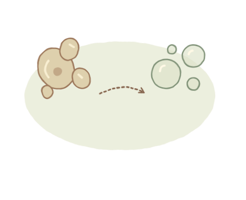
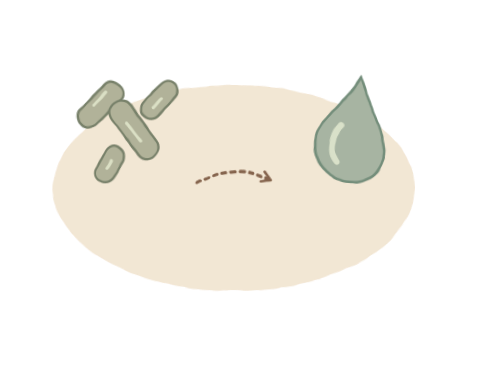
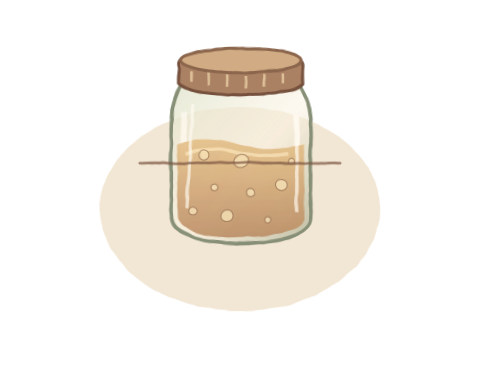
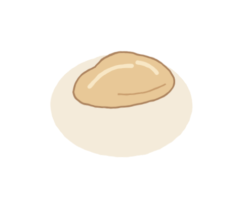
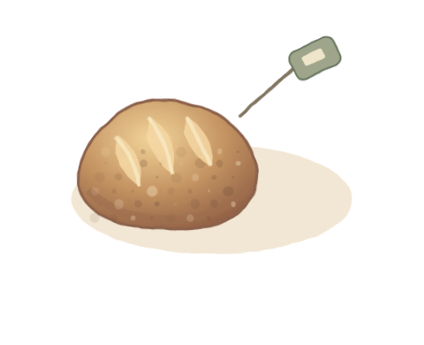
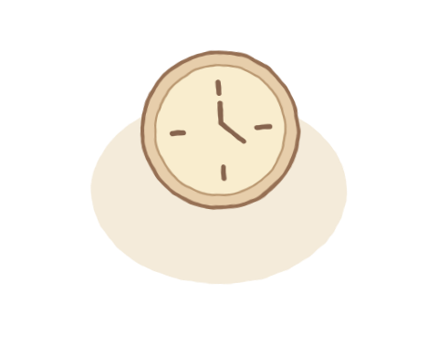
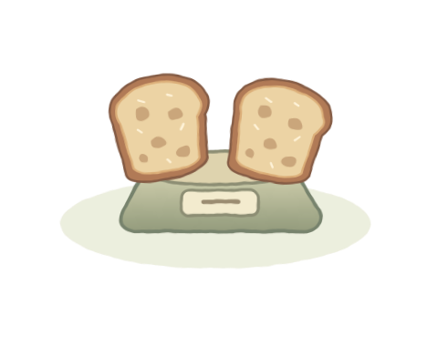

酸種這一罐是什麼？
酸種是麵粉、水和在裡面生長的微生物。

先養一罐，再做麵包
微生物很小，餵過的酸種卻會出現看得見的氣泡與體積變化。
下一頁先看這些微生物各自做了什麼。
酸種是麵粉、水和在裡面生長的微生物。
微生物很小，餵過的酸種卻會出現看得見的氣泡與體積變化。
下一頁先看這些微生物各自做了什麼。
酵母產氣讓麵糰膨脹，乳酸菌產酸影響風味。

氣體留在麵糰裡，讓麵糰漲大。

乳酸等有機酸會影響味道。
微生物會利用麵粉裡的糖等養分。接下來把粉和水混在一起，開始養自己的酸種。
洗手、備好乾淨容器與器具，再把麵粉和水拌勻。

清潔工作檯、寬口玻璃罐和攪拌器具。

用美式量匙量 2 平大匙麵粉與 2 大匙蒸餾水，拌在一起。

研究用乾淨紙巾覆住罐口，在室溫放 24 小時。
這是既有研究的起始操作示例。下一頁看研究如何續餵，以及家庭指南怎麼用秤。
餵養是取出一部分，再用新粉和水餵剩下的酸種。
約每 24 小時拌勻，取出並丟掉 1 美式大匙舊酸種。各加 1 美式大匙新麵粉和水，拌勻後用乾淨紙巾覆住。

留下 20 克舊酸種，就加 20 克粉、20 克水。這是 1:1:1 的等重示算。
量匙示例省略研究採樣。用秤是另一種餵法。拌好後先記罐高，下次就有比較基準。
單次漲高只是一筆觀察；看多次餵養後是否反覆膨脹。

寫下餵養時的高度和時間。

看罐側高度和氣泡，和起始線比一比。

初期先漲後停或回落，研究有觀察到。把幾次的紀錄放在一起看。
研究追蹤 14 天。家裡看自己這罐的反覆變化，再決定何時分出一份做麵包。
多次餵養後能反覆漲高，再把母種分成留養和本次烘焙兩份。
「母種」是平常持續餵養的酸種。留一部分作為下一次的起點。

依 CSU 兩個中型麵包配方，另取 ½ 美式杯已建立酸種，拌入 ½ 杯水與 ¾–1 杯麵粉。鬆蓋，室溫漲到約兩倍時用。
酵頭這份用未漂白、蛋白質約 11–13% 的通用麵粉，杯量都是美式量杯。等這份漲到位，就來拌麵糰。
把酵頭加水、粉和鹽，揉到麵糰柔軟好整理。

把整份酵頭放入大碗，拌入 2 美式杯水。

拌入 2–3 美式杯通用麵粉，攪約 100–200 下，再拌入 1½–2 茶匙鹽。

分次補粉，揉到柔軟。放入抹薄油的碗並翻面，蓋好，留膨脹空間。
這是同一個兩個中型麵包的配方。下一頁用體積安排兩次發酵。
第一次發酵後整形，整形後在烤模裡等最後發酵。
依本室溫配方，等整團麵糰漲到約兩倍。

將邊緣收到底下，讓麵糰表面略繃緊。

放入抹油或鋪烘焙紙的吐司模或派盤，蓋好，再等體積約翻倍。
到這裡，順序是分出酵頭、拌麵糰、第一次發酵、整形、最後發酵。接著入爐。
採 CSU 原文的替代烘烤流程：中層麵包，最底層蒸氣盤。

CSU 的參考烤溫為 425 °F（約 218 °C）。最底層放空的耐烤箱淺盤；裝麵糰的烤盤或烤模免預熱。

先在麵糰表面劃口。麵包放入中層時，將 ½–1 美式杯沸水倒入底層蒸氣盤。小心熱蒸氣，拿熱烤具用隔熱手套。
你的 230 °C 旋風／氣炸烤箱，須先確認說明書允許此模式放蒸氣盤並注入沸水，並能配置中層與最底層，才適用這個蒸氣盤流程。CSU 未提供此模式換算值，實際設定依說明書和烤箱表現調整。
以這份配方的烤色和中心熟度判斷，出爐後放到完全冷卻。

CSU 原文約 35–45 分鐘供參考。烤色應呈金黃至深褐。

用食物溫度計確認中心達 190 °F（約 88 °C）。未達則續烤。

戴隔熱手套取出烤具，把麵包移上網架，完全冷卻後再切。
時間與中心溫度是這份配方的參考與熟度指標。烤完回頭看，若酸種那一關不順，下一頁有排查方式。
漲得慢，查養種條件。明顯發黴，丟掉全部酸種。

回查室溫、用粉、粉水比例和餵養間隔，再比較同一罐的變化。
丟掉容器裡的全部酸種，徹底洗淨並沖洗容器。
生酸種避免試吃。氣泡、氣味和高度只用於追蹤發酵活性。
酸種麵包的健康效果要看比較條件，麩質要看原料。

有些成人試驗看到較低的餐後血糖反應，有些未見明確差異。比較時要看用粉、製程和對照麵包。
用含麩質麵粉做的酸種麵包仍含麩質，乳糜瀉患者應避開這類麵包。
現有證據不足以確定單靠酸種發酵就有臨床健康效益。